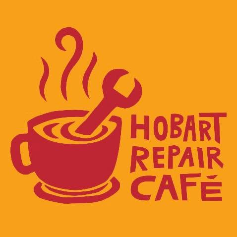
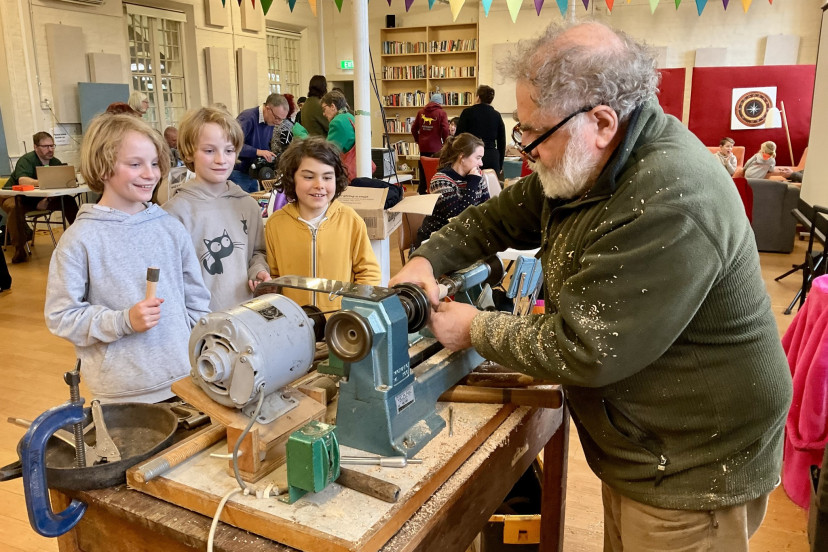
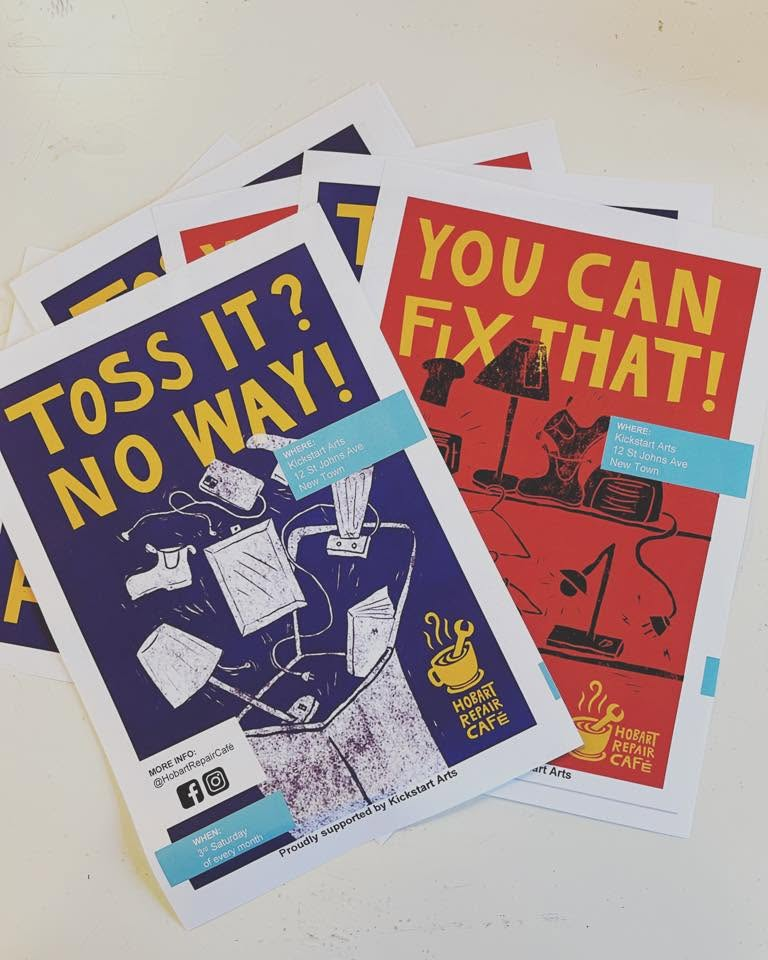
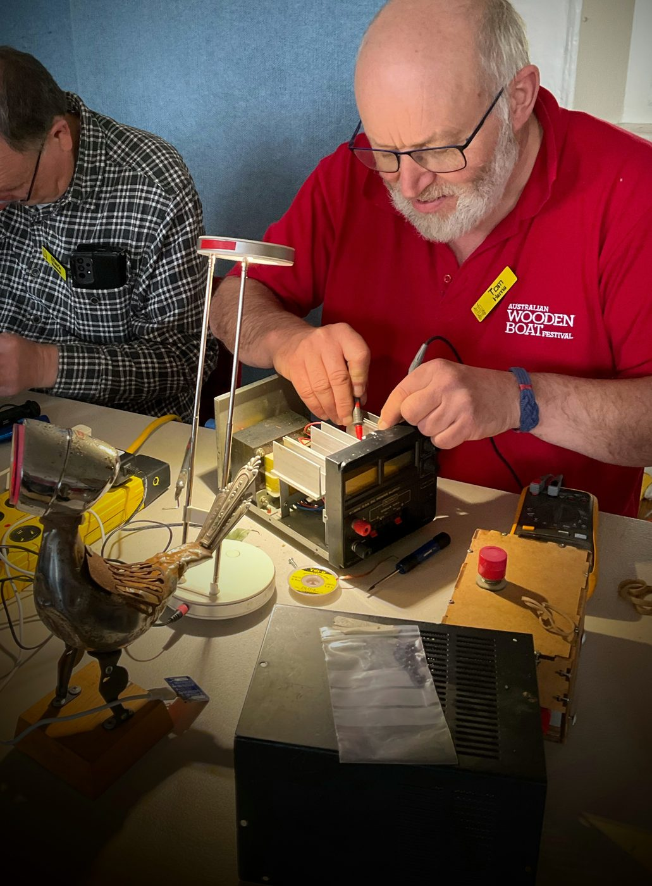
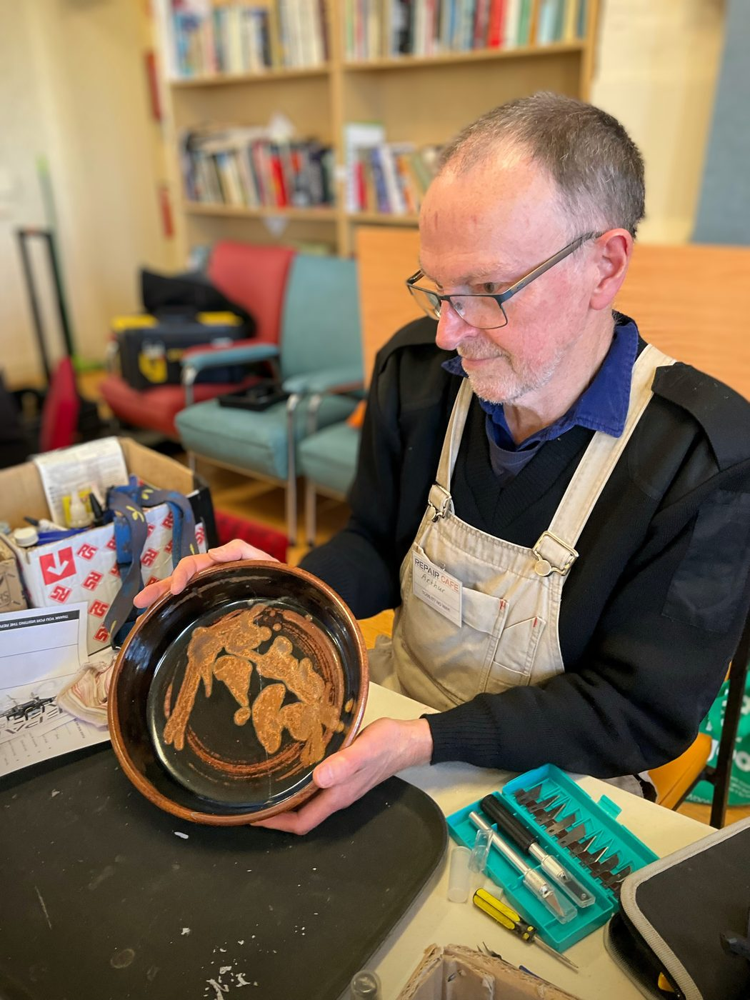
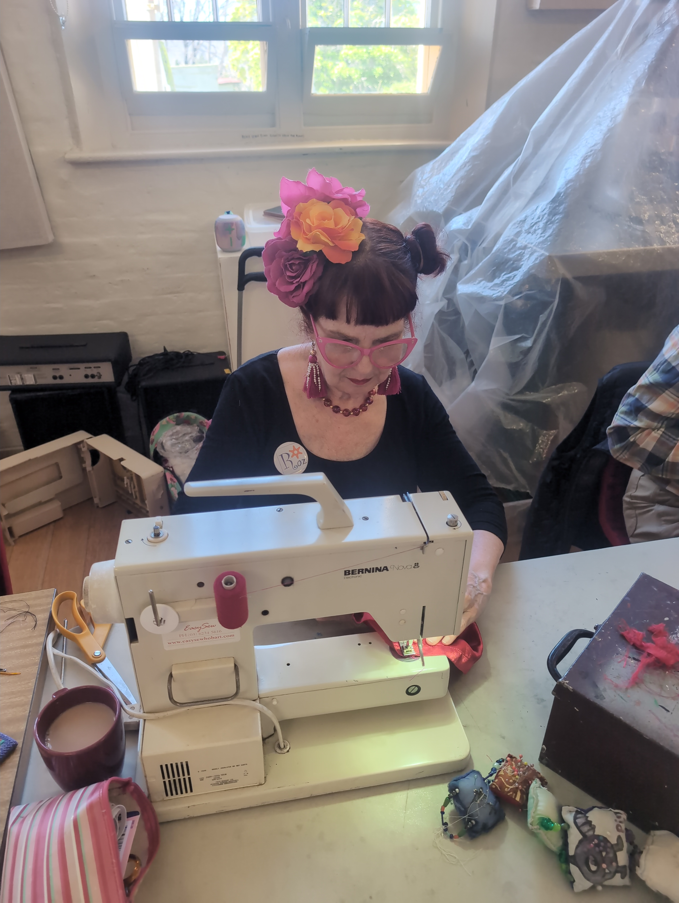
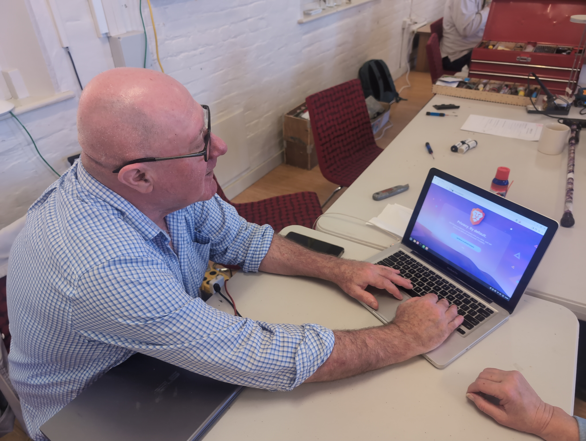

Tell us about it
Check in with the welcome team and describe what has happened to your item. Read our Terms & Conditions (PDF).

Repair Café HobartA neighbourly place to fix things
Bring along something that needs attention. Meet a volunteer repairer, learn what might be possible, and enjoy a cuppa while we give useful things another chance.
Repairs are collaborative and depend on the item, parts and available skills.

Good things, kept going
Repair Café Hobart is a community get-together where people bring repairable household items and work alongside volunteer fixers. It’s a place to share practical skills, ask questions and make connections.
We believe repair is a useful, hopeful way to reduce waste and help everyday objects last longer. Everyone is welcome to come along, whether you’re bringing an item, lending a hand or simply curious.
We are part of a worldwide Repair Café network.
See how a café works
Toss it? No way!
Our café brings people, practical skills and good ideas together. Come along to see what might be repairable, learn something new and enjoy a friendly cuppa.
Find your next caféA relaxed way to get started
Bring your curiosity. We’ll work it out together.
We welcome donations to help cover our expenses.
Check in with the welcome team and describe what has happened to your item. Read our Terms & Conditions (PDF).
A volunteer will look at it with you. You’re encouraged to stay and take part as we investigate.
Have a cuppa, meet people and pick up a tip or two, whether or not a repair is possible on the day.
Repairs are offered in a shared community setting. Some items may be unsafe, too complex, or need parts we don’t have, so a repair can’t be guaranteed.
Repair Café Hobart is run entirely by volunteers. We welcome donations to help cover our expenses.
If you’d like to donate, thank you! You can use repaircafehobart@gmail.com for PayID, donate cash at the front desk, or transfer to Repair Cafe Hobart Inc. BSB 633000 Account No. 168197465.
Bring it along
Volunteer skills vary at each session. Tell us what you have and we’ll do our best to point you in the right direction.
Small items, appliances and useful things that might be repairable.
There may be help with bikes, tech, sharpening and mechanical items.
Ask about sewing, patching, jewellery, leatherwork and other handcrafts.
We say, “If you can get it through the door, we can take a look”; however, it is unlikely we will be able to repair cracked screens, smart TVs and watches.
If you have an unusual item that you think might be complex to repair, please email repaircafehobart@gmail.com or message us on Facebook. Tell us the problem and symptoms, what you have already tried, and, for appliances, the make, model and approximate age. Include a photo if it may help a repairer identify the problem.
We’ll ask our repairers what they think and get back to you.
The repair categories above reflect volunteer roles in the roster workbook. Availability at each café needs to be confirmed.
Looking for repair ideas and practical advice? Explore repair tips and tricks from Repair Café International.
A glimpse of café day
Visitors and volunteers share skills, tools and ideas around the workbench.




Every repair makes a difference
Completed repairs, partial repairs and practical advice — helping good things stay in use.
Loading repair statistics…
Your skills are welcome
There are many ways to pitch in, from greeting people and serving tea to sharing a repair skill. You don’t need to be an expert to help create a warm, welcoming café.
New to volunteering? Tell us a little about yourself and the skills or support you can offer. The form is for joining our volunteer team; session availability is organised separately through the roster.
Become a volunteerWays to lend a hand
Roles are based on the current roster workbook and may change for each event.
Say hello
Questions about a repair, volunteering or the next café? Email the team or follow the official Repair Café Hobart Facebook page.
Contact Repair Café Hobart
Email: repaircafehobart@gmail.com
Facebook: Repair Café Hobart
Instagram: @repaircafehobart
Venue: Kickstart Arts Inc, 12 St John’s Avenue, New Town
Acknowledgement of Country
Repair Café Hobart pays its respects to the original owners of the lands where we work, the palawa people. We recognise Tasmanian Aboriginal people as continuing custodians of Lutruwita, and honour Elders past, present and emerging.